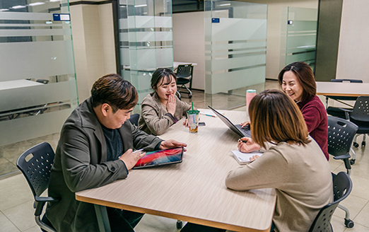
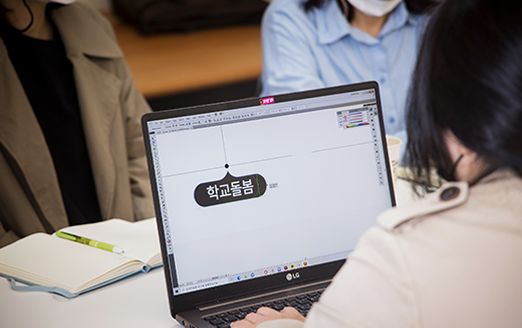

센터소개
공간기반 혁신활동 지원사업
소통협력공간에서 관계형성을 위한 개방적 모임을 운영하고,
지역문제 해결을 위한 혁신활동을 하고자 하는 주체를 발굴•지원하여 지역 커뮤니티 거점공간을 활성화합니다.
(*2021년 하반기 소통협력공간 개소 이후 운영 예정)


- 공간기반 열린모임 지원
-
공간을 기반으로, 제주에서의 삶, 지역 이슈에 관심을 가진 주민 간의 교류를 촉진하는 커뮤니티 활동 지원
- 대상 : 지역문제에 관심을 갖고 커뮤니티를 구성하여 소통협력공간 및 지역거점공간을 기반으로 개방형 모임을 추진하려는 주민, 단체 등
- 내용 : 각 공간 주제별 소모임, 워크숍, 세미나 등 개방형 모임활동과 콘텐츠 제작 활동 지원
- 코워킹 스페이스 공간 지원
-
지속가능한 제주의 삶을 연구하는 열린 실험실을 지향하고 지역문제 해결을 위한 혁신활동을 하고자 하는 주체들이
사용할 수 있는 공간 지원- 대상 : 지역문제 해결을 위한 방법을 모색하기 위해 일정한 공간 사용을 희망하는 개인, 커뮤니티, 단체
- 내용 : 이용자들의 커뮤니티 모임 참여를 이끌어내고 협업을 통해 지속적으로 공간 프로그램 활성화
- 공유공간 환경조성 및 입주자•사용자 협의회 운영
-
지역주민들과 함께 만드는 공간이라는 공동의 경험을 제공하기 위해 워크숍을 진행하고 공유공간 운영에 관심있는
주체들과 이용자 중심의 커먼즈(공동자원) 공간문화 형성